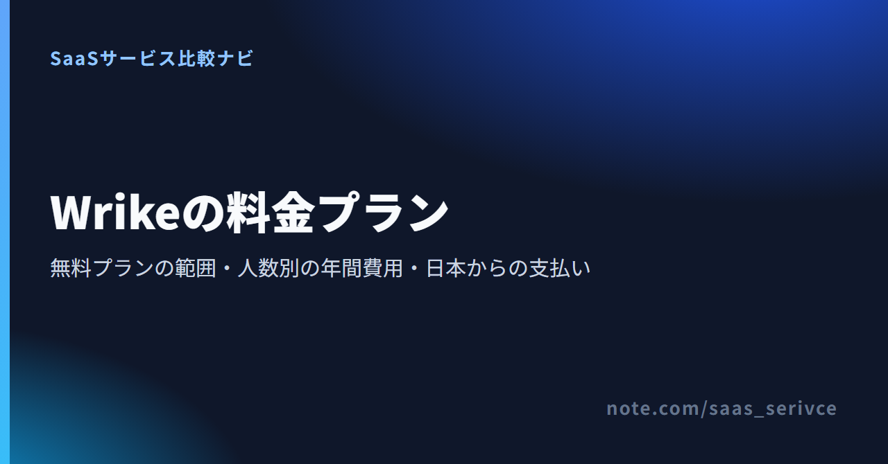

Wrikeの料金を調べると、「Professional」というプラン名で説明する記事と「Team」で説明する記事が混在していて、どれが正しいのか迷います。Wrikeは2026年1月に料金体系を改め、新規購入はFree、Team、Business、Pinnacle、Apexの5プランになりました。
しかも表示価格は1ユーザーの月額ですが、請求は年額の一括払いです。この記事では、無料プランで足りるか、有料なら自分のチームの人数で年間いくらになるか、日本からどう払うかを順に整理します。無料で始めるか、TeamとBusinessのどちらを契約するかを決める材料にしてください。
15人以下でガントチャートやダッシュボードを使うならTeam、16人以上か、承認・タイムトラッキングが必要ならBusinessです。 タスクが少なく、進捗を一覧で見られれば十分なチームは、無料プランで始められます。
無料プランはユーザー数に上限がない代わりに、進行中のタスクは200件まで、共有スペースは1つまでです。
Teamは2〜15ユーザーで使うプランです。無料プランにないガントチャート、共有ダッシュボード、カスタムフィールドが加わり、1つのチームの日程と進み具合を全員で共有できます。
Businessは5〜200ユーザーが対象で、16人以上のチームは最低でもBusinessが必要です。ただし16人以上は作業スペースから自分で購入できず、Wrikeの担当者を通して契約します。15人以下でも、成果物の承認や作業時間の記録をWrikeの中で行うなら、Businessが候補です。
料金ページは日本語で表示されますが、価格はUSD建てです。プランごとの人数の範囲も同じページに載っています。
価格はUSD建て・税別で、表示額は年額一括請求を1ユーザーの月額に換算したものです。 円の目安は1ドル=157円換算（執筆時点の目安。為替で変動）で示します。
料金ページの「$10」「$25」は、1年分をまとめて支払う前提で月あたりに割った金額です。毎月この額が請求されるわけではありません。月払いの価格は掲載されておらず、Businessから上のプランは年間契約のみです。社内で予算を申請するときは、次の章の年額を使ってください。
ProfessionalやEnterpriseの名前で料金を載せている記事は改定前の情報で、旧プランの単価はいまの新規購入には当てはまりません。
単価がわかったら、次はチームの人数を掛けた年額で考えます。人数の帯でプランが決まるため、1人の差で総額が大きく変わることがあります。
15人まではTeamで年$1,800が上限ですが、16人になるとBusinessへ移り、年額が大きく跳ね上がります。 計算は「単価×席数×12か月」で、10人のTeamなら$10×10席×12か月＝$1,200です。
5の倍数の人数なら、人数と購入する席数が一致します。Teamでは5人増えるごとに年額が$600ずつ増え、15人でも約28万円に収まります。
2〜4人の小さなチームも、席は5席単位で買うため、5人と同じ年$600になります。Teamは2ユーザーからのプランなので、1人で使うなら、まず無料プランで足りるかを確かめてください。
Teamの上限は15ユーザーです。16人目を加えると、Teamの機能しか使わないチームでもBusinessへ移り、単価は$10から$25になります。
15人のTeamが年$1,800、16人のBusinessを20席分で買うと年$6,000。1人の増員で年額が$4,200（約659,400円）増える計算です。人数が15人前後で推移しているチームは、増員の予定を契約前に確かめてください。
契約の窓口も変わります。作業スペースの「アカウント」から自分で購入できるのは、アドオンなしのTeamとBusinessで15ユーザーまでです。16人以上になると画面からカードで買い足せないため、Wrikeの担当者に問い合わせて契約します。
30席までは、席を5席単位で購入します。たとえば7人のチームでも10席分を買うことになり、Teamなら年額は10人と同じ$1,200（約188,400円）です。
端数の人数では使わない席の分も支払うため、近いうちに人が増えるなら、余った席を増員分に充てる前提で考えます。30人を超えると10席単位、100人を超えると25席単位に変わります。
期限なしで使える無料プランと、有料プランを試す14日間トライアルは別の制度です。 「Wrikeは無料で使える」という情報は、どちらを指しているかで意味が変わります。
無料プランは$0で、登録にクレジットカードは要りません。ユーザー数は無制限ですが、同時に進行中にできるタスクとサブタスクはアカウント全体で合計200件まで、共有スペースは1つ、ストレージは2GB/アカウントです。
200件に達すると、既存のタスクを完了・キャンセル・削除するまで新しいタスクを作れません。人数の多いチームほど、ユーザー数より先にタスク数の上限に当たります。
無料プランでも、ボード表示とテーブル表示、Web・デスクトップ・モバイルの各アプリは使えます。一方、次の機能は使えません。
有料プランには14日間の無料トライアルがあり、こちらもカードの登録は要りません。ガントチャートやダッシュボードが自分のチームの管理方法に合うかは、この期間に確かめられます。
トライアルが終わると、無料プランに移るか有料プランを買うかを選ぶまで、アカウントは一時的に使えなくなります。その間もデータは残り、無料プランを選んだ場合は、トライアル中に使っていた上位プランの機能だけが使えなくなります。
無料で確かめたいのは、進行中のタスクが200件に収まるかと、ガントチャートが本当に必要かの2点です。タスクが200件を超えそうなとき、またはガントチャートが欠かせないとわかったときは、有料プランで見積もります。
無料プランを「最大5ユーザー」と紹介する記事がありますが、これは従来の無料プランの条件です。現行の無料プランはユーザー数無制限で、上限はタスク数と共有スペースの数にかかります。
Teamは1チームの進捗を見える化するプラン、Businessは複数チームの承認と工数を管理するプランです。 迷ったら、「承認」「作業時間の記録」「稼働の割り振り」をWrikeの中で行うかどうかで判断します。
独自のテンプレート（カスタムテンプレート）や、Salesforceなどとの連携もBusinessからです。同じ手順の案件を繰り返し立ち上げる部署や、営業の案件管理とつなげたい部署はBusinessを選びます。SlackやGoogle Workspace、Office 365との連携はTeamでも使えます。
Pinnacleは、高度なリソース計画、予算管理、高度なレポートとBI機能、SSOが必要な組織向けです。Apexはさらに、Whiteboard無制限、Wrike Integrate、Wrike Sync、3,000万レコードまでのDatahubを備えます。Whiteboardは本来$15/ユーザー/月のアドオンなので、ホワイトボードを全員で使う組織ほどApexとの差額を見比べる意味があります。
支払いはクレジットカードで、価格も請求書もUSD建てです。 日本円の定額で請求されるわけではない点を、契約前に押さえておきます。
オンラインで購入する場合は、クレジットカードで支払います。価格はUSDで表示されますが、カードの請求は日本円になり、金額は決済時の為替レートで決まります。
16人以上で担当者を通して契約する場合の支払い方法は、料金ページに載っていません。請求書払いにしたいなら、見積りを頼む段階で聞いておきます。
請求書はUSD建てで発行され、印刷手順は公式ヘルプに載っています。USDの請求額とカード明細の円の金額は一致しない前提で、経理処理を決めておきます。
海外のSaaSへの支払いを消費税の申告でどう扱うかは、契約の形態や自社の状況で変わります。処理の方法は税理士に確認してください。
少人数ならユーザー課金のツール同士を、人数が多いなら組織単位の定額制のBacklogも比べます。 単価に加えて、何を単位に課金するかと、無料枠がどこで終わるかも見ておきます。
Asanaは、日本から料金ページを開くと円建て・税別で表示されます。有料のStarterは1ユーザーあたり年払いで月額1,200円、月払いで月額1,475円と、Wrikeにはない月払いの価格があります。
AsanaはStarterでタイムラインとガント、ダッシュボードが使えます。予算を円で固定したいチームは比べておく価値があります。
国産のBacklogは円建て・税別で、1ユーザーごとではなくプランごとの定額で課金されます。
16人以上でWrikeのBusinessになるチームほど、人数が増えても月額が変わらないBacklogとの差が開きます。ただし、Backlogでガントチャートを使えるのはStandard（月額16,000円・税別、ユーザー数無制限）からです。ガントチャートが要るチームなら、WrikeのBusiness 20席（年$6,000）と、Backlog Standardの年額（月払いで192,000円・税別）を並べて比べます。
2027年1月には新しいプランへ切り替わり、下位のEconomyは15ユーザーまでになります。申し込む時期と更新日によって、比べるべき料金が変わる点に注意してください。
monday.comは、Wrikeと同じく席数の単位で購入する方式です。最低3席から、その先は5席単位で増やします。
年払いは月払いより18%安くなります。無料で使える人数の差は大きく、monday.comの無料プランは2席まで、Wrikeの無料プランはユーザー数無制限です。3人以上で無料のまま回したいならWrike、有料前提で最低3席から始めたいならmonday.comが候補になります。
ClickUpはWrikeと同じUSD建てのユーザー課金です。年払いの月額換算で、Unlimitedが1ユーザー$7、Businessが$12。月払いにするとそれぞれ$10、$19になります。
ClickUpは月払いの価格も公開しています。年額を一括で払う前に数か月だけ有料機能を使ってみたいなら、月払いの価格が載っていないWrikeとはここで差がつきます。
解約は即時に有効となり、未使用期間の返金は原則ありません。 席数を減らすときも、担当者への連絡が必要です。
更新日の前に解約すれば、次の期間の自動更新を止められます。ただし現行の利用規約では解約は即時に有効となり、アカウントは停止されるか、無料プランへ切り替わる可能性があります。
年払いの途中で解約しても、残りの期間分の返金やクレジットは原則ありません。早めに解約操作をすると、支払い済みの期間まで使えなくなるおそれがあります。更新しないと決めたら、解約の操作は更新日の直前に行うのが安全です。年払いが前提なので、契約そのものも1年間使い続ける見込みが立ってからにしてください。
プランのダウングレードや席数の削減は、WrikeのRenewals ManagerまたはAccount Managerへの連絡が必要です。自分でダウングレードできるのは、年払いで有料席が15席以下、アドオンなしなどの条件を満たすBusinessをTeamへ下げる場合に限られます。
退職や案件の終了で人が減る可能性があるなら、席数は控えめに始めたほうが後の調整で困りません。
Wrikeの費用は、人数と必要な機能の組み合わせでほぼ決まります。契約前に次の4つを確かめてください。
まずは無料プランか14日間のトライアルで、タスクの件数と必要な機能を確かめてください。そのうえで人数分の年額を計算し、TeamとBusinessのどちらを契約するかを決めます。